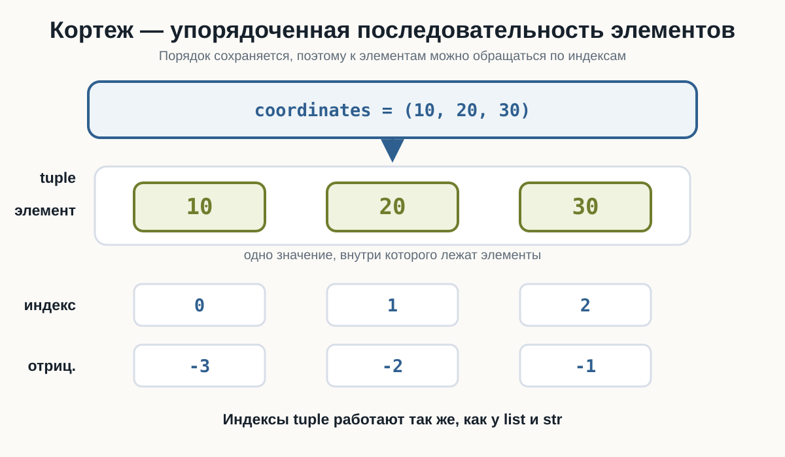
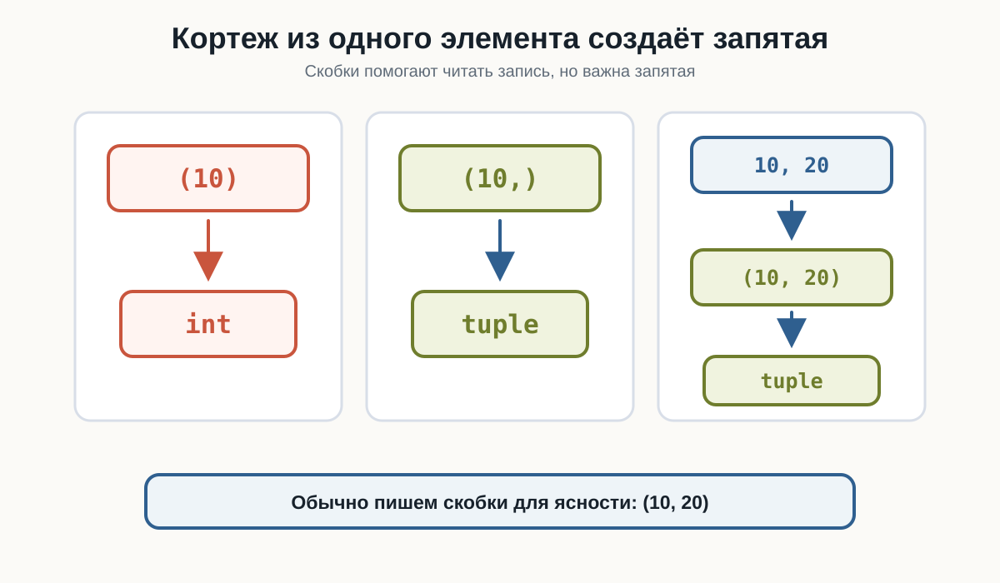
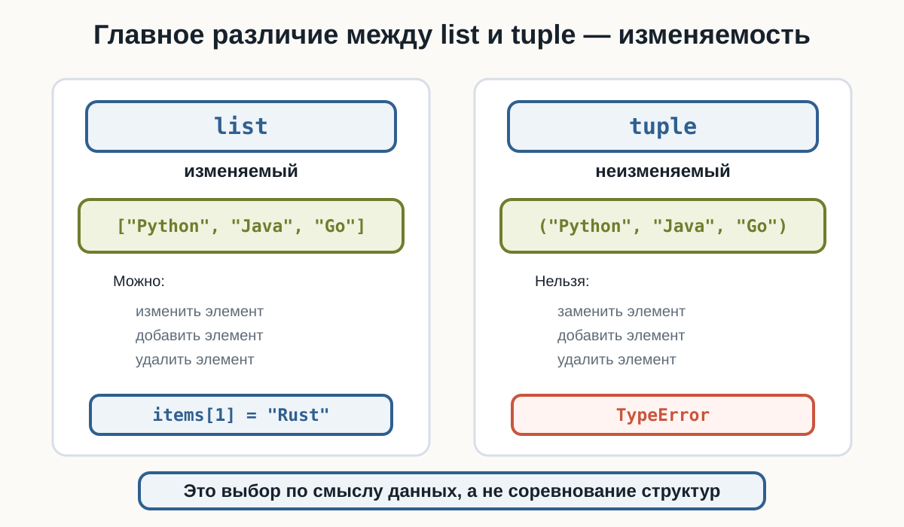
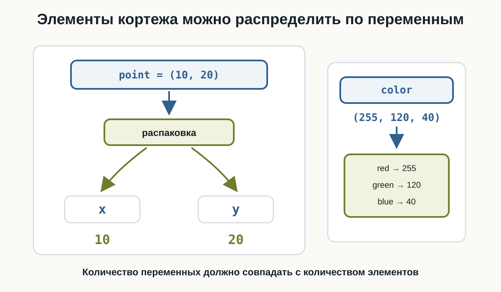
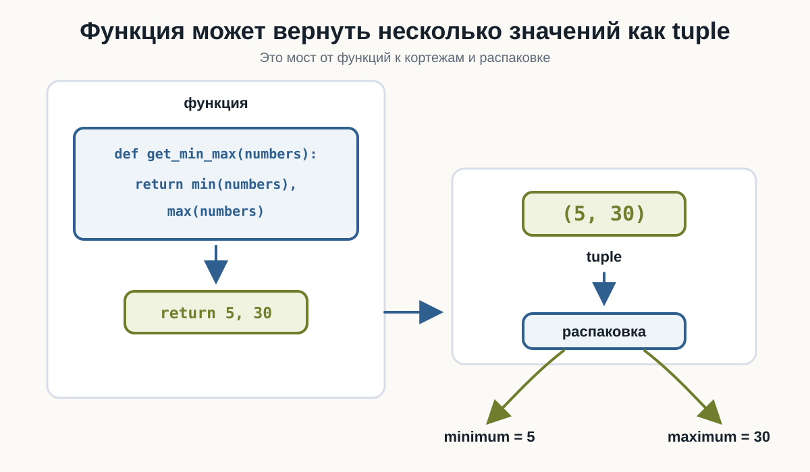

4.1 Кортежи
Главный вопрос главы:
Как хранить несколько значений, которые после создания не должны изменяться?
В предыдущем томе мы познакомились со списками. Список хранит несколько значений и позволяет менять набор элементов:
languages = ["Python", "Java", "Go"]
languages.append("Rust")
languages[1] = "C++"Но иногда набор значений должен оставаться фиксированным после создания.
Например:
координаты точки
цвет в формате RGB
дата
размер изображения
набор фиксированных настроекДля таких случаев в Python есть кортеж.
Первый кортеж
Кортеж обычно записывают в круглых скобках:
coordinates = (10, 20)
print(coordinates)
print(type(coordinates))Результат:
(10, 20)
<class 'tuple'>Внутри два значения, но вся конструкция целиком — одно значение типа tuple.
Элементы кортежа
Как и список, кортеж содержит элементы в определённом порядке.
Например:
point = (10, 20, 30)Здесь три элемента: 10, 20 и 30. Все они принадлежат одному значению point.

Кортеж похож на список
Список и кортеж во многом ведут себя одинаково:
numbers_list = [10, 20, 30]
numbers_tuple = (10, 20, 30)Обе структуры сохраняют порядок, поддерживают индексы, len(), срезы, перебор через for и проверку через in.
Главное различие:
list → изменяемый
tuple → неизменяемыйКортеж, как и список, может хранить значения разных типов:
user = ("Анна", 25, 1.68, True)
print(user)Но чаще кортеж используют для небольшой фиксированной группы связанных значений: координат, RGB-цвета, размера изображения.
Пустой кортеж
Кортеж может быть пустым:
items = ()Проверим:
items = ()
print(items)
print(type(items))
print(len(items))Результат:
()
<class 'tuple'>
0Кортеж из одного элемента
У кортежа из одного элемента есть важная особенность:
value = (10)
print(type(value))Результат:
<class 'int'>Круглые скобки сами по себе могут просто группировать выражение. Для кортежа из одного элемента нужна запятая:
value = (10,)
print(value)
print(type(value))Результат:
(10,)
<class 'tuple'>Главная разница:
(10) → int
(10,) → tupleКортежи обычно записывают в круглых скобках, а важную роль в синтаксисе кортежа играет запятая.
Скобки помогают читать код
Технически кортеж можно записать и без круглых скобок:
point = 10, 20Проверим:
point = 10, 20
print(point)
print(type(point))Результат:
(10, 20)
<class 'tuple'>Но в учебном коде чаще будем использовать:
point = (10, 20)Так структура заметнее, и читателю проще увидеть, что это единая группа значений.

Индексы кортежа
Индексы кортежа работают так же, как индексы строки и списка.
Рассмотрим:
languages = ("Python", "Java", "Go")Положительные индексы начинаются с 0, отрицательные идут с конца:
элемент: Python Java Go
индекс: 0 1 2
отриц.: -3 -2 -1Пример:
languages = ("Python", "Java", "Go")
print(languages[0])
print(languages[1])
print(languages[-1])
print(languages[-2])Результат:
Python
Java
Go
JavaОшибка индекса
Если обратиться к несуществующей позиции:
languages = ("Python", "Java", "Go")
print(languages[10])Python сообщит:
IndexErrorПричина та же, что со строками и списками: элемента с таким индексом нет.
Длина кортежа
Количество элементов возвращает len():
languages = ("Python", "Java", "Go")
print(len(languages))
print(len(()))Результат:
3
0Срезы кортежей
Кортеж поддерживает срезы в формате [start:stop:step]. Граница stop не включается:
numbers = (10, 20, 30, 40, 50)
print(numbers[1:4])
print(numbers[:3])
print(numbers[2:])
print(numbers[-2:])
print(numbers[::2])
print(numbers[::-1])Результат:
(20, 30, 40)
(10, 20, 30)
(30, 40, 50)
(40, 50)
(10, 30, 50)
(50, 40, 30, 20, 10)Срез кортежа возвращает новый кортеж. Исходный кортеж не изменяется.
Перебор и проверка
Кортеж можно перебирать через for и проверять через in / not in:
languages = ("Python", "Java", "Go")
for language in languages:
print(language)
print("Python" in languages)
print("Rust" not in languages)Кортеж нельзя изменить
Рассмотрим список:
languages = ["Python", "Java", "Go"]
languages[1] = "Rust"
print(languages)Результат:
['Python', 'Rust', 'Go']Со списком это работает.
С кортежем та же операция приведёт к ошибке:
languages = ("Python", "Java", "Go")
languages[1] = "Rust"Python сообщит об ошибке:
TypeErrorКортеж неизменяемый.
Что означает неизменяемость
После создания кортежа нельзя заменить, добавить или удалить отдельный элемент.
Например, не работает:
point[0] = 100После создания:
point = (10, 20)нельзя изменить отдельный элемент:
point[0] = 100Если нужны другие значения, создаётся новый кортеж.

Можно создать новый кортеж
Неизменяемость не означает, что имя переменной навсегда связано с одним значением:
point = (10, 20)
point = (100, 200)
print(point)Результат:
(100, 200)Здесь старый кортеж не изменился. Переменная point просто получила новое значение.
Объединение кортежей
Кортежи можно объединять через +:
first = (1, 2)
second = (3, 4)
result = first + second
print(result)Результат:
(1, 2, 3, 4)Исходные кортежи не изменяются. Создаётся новый кортеж.
Повторение кортежа
Оператор * повторяет содержимое и тоже создаёт новый кортеж:
values = (1, 2)
print(values * 3)Результат:
(1, 2, 1, 2, 1, 2)count()
Метод count() считает количество совпадений:
numbers = (10, 20, 10, 30, 10)
print(numbers.count(10))Результат:
3index()
Метод index() возвращает индекс первого совпадения:
languages = ("Python", "Java", "Go")
print(languages.index("Java"))Результат:
1Если значения нет, возникнет:
ValueErrorПочему у кортежа мало методов
У списка есть методы для изменения: append(), insert(), remove(), pop(), sort(). У кортежа таких методов нет, потому что он неизменяемый.
Основные методы кортежа всего два:
count()
index()List и tuple
Соберём главное различие:
| Свойство | list |
tuple |
|---|---|---|
| Синтаксис | [1, 2, 3] |
(1, 2, 3) |
| Индексы | да | да |
| Отрицательные индексы | да | да |
len() |
да | да |
| Срезы | да | да |
for |
да | да |
in |
да | да |
| Изменение элемента | да | нет |
append() |
да | нет |
remove() |
да | нет |
Используйте list, когда набор должен изменяться:
tasks = ["Учить Python", "Сделать проект"]
tasks.append("Прочитать документацию")Используйте tuple, когда значения образуют фиксированную группу:
point = (10, 20)
color = (255, 120, 40)
size = (1920, 1080)Не нужно заменять все списки кортежами. list и tuple решают разные задачи.
Распаковка кортежа
Кортеж можно разложить по нескольким переменным:
point = (10, 20)
x, y = point
print(x)
print(y)Результат:
10
20Это называется распаковкой:
(10, 20)
↓
x y
↓ ↓
10 20Порядок важен: первый элемент попадает в первую переменную, второй — во вторую.

Распаковка трёх значений
Например:
color = (255, 120, 40)
red, green, blue = color
print(red)
print(green)
print(blue)Результат:
255
120
40Здесь:
255 → red
120 → green
40 → blueКоличество переменных должно совпадать
При простой распаковке количество переменных должно совпадать с количеством элементов:
point = (10, 20)
x, y, z = pointPython сообщит:
ValueErrorПри простой распаковке:
x, y = (10, 20)количество переменных должно соответствовать количеству элементов.
2 элемента
↓
2 переменныеКортеж можно распаковать сразу
Отдельная переменная для кортежа не обязательна:
x, y = (10, 20)
print(x)
print(y)Результат:
10
20Можно встретить и запись без скобок:
x, y = 10, 20Результат тот же: несколько значений распределяются по нескольким переменным.
Обмен значений переменных
Распаковка позволяет удобно поменять значения местами:
a = 10
b = 20
a, b = b, a
print(a)
print(b)Результат:
20
10Функция может вернуть несколько значений
В предыдущей главе мы изучили функции. Если функция возвращает несколько значений через запятую, Python собирает их в кортеж:
def get_point():
return 10, 20Вызов:
point = get_point()
print(point)
print(type(point))Результат:
(10, 20)
<class 'tuple'>Результат функции можно сразу распаковать:
def get_point():
return 10, 20
x, y = get_point()
print(x)
print(y)Результат:
10
20Получается цепочка:
функция
↓
return 10, 20
↓
(10, 20)
↓
распаковка
↓
x = 10
y = 20Так функции и кортежи хорошо работают вместе.

Пример: минимальное и максимальное значение
Функция может вернуть два связанных результата:
def get_min_max(numbers):
return min(numbers), max(numbers)
numbers = [12, 5, 30, 8]
minimum, maximum = get_min_max(numbers)
print("Минимум:", minimum)
print("Максимум:", maximum)Результат:
Минимум: 5
Максимум: 30Кортежи внутри списка
Кортежи можно хранить внутри списка:
points = [
(10, 20),
(30, 40),
(50, 60)
]Здесь points — изменяемый список точек, а каждая точка — фиксированный кортеж координат.
Перебор списка кортежей
Можно вывести каждую точку целиком:
points = [
(10, 20),
(30, 40),
(50, 60)
]
for point in points:
print(point)Результат:
(10, 20)
(30, 40)
(50, 60)Распаковка прямо в for
Или сразу распаковать каждую точку в цикле:
points = [
(10, 20),
(30, 40),
(50, 60)
]
for x, y in points:
print("x:", x, "y:", y)Результат:
x: 10 y: 20
x: 30 y: 40
x: 50 y: 60На каждой итерации очередной кортеж распаковывается в x и y.
Где list и tuple работают вместе
Частый вариант: список хранит изменяемый набор объектов, а кортеж описывает один фиксированный объект.
points = [
(2, 5),
(10, 3),
(7, 8)
]
for x, y in points:
print("Координаты:", x, y)Ещё пример:
resolutions = [
(1920, 1080),
(2560, 1440),
(3840, 2160)
]
for width, height in resolutions:
print(width, "x", height)Смысл тот же: list хранит набор, который может расти или уменьшаться, а tuple хранит фиксированную пару значений.
bool кортежа
Как и другие коллекции, пустой кортеж:
()считается ложным значением:
print(bool(()))Результат:
FalseНепустой:
print(bool((10, 20)))Результат:
TrueПоэтому можно встретить:
if coordinates:
print("Координаты заданы")Итоговый ориентир
Будут ли элементы набора изменяться?
↓
да нет
↓ ↓
list tupleЭто не жёсткое правило на все случаи. Главное — понимать смысл данных и выбирать структуру осознанно.
Попробуйте сами
Создайте:
values = (10, 20, 30, 40, 50)Перед запуском предскажите результаты:
print(values[0])
print(values[-1])
print(values[1:4])
print(len(values))
print(30 in values)Затем попробуйте:
values[0] = 100и посмотрите, какую ошибку сообщит Python.
После этого сравните тот же эксперимент со списком:
values = [10, 20, 30, 40, 50]
values[0] = 100Обратите внимание на различие между tuple и list.
Что важно запомнить
Кортеж имеет тип:
tupleПример:
point = (10, 20)Он хранит несколько элементов:
(10, 20)Поддерживает индексы:
point[0]
point[-1]Длину:
len(point)Срезы:
point[start:stop:step]Перебор:
for value in values:
...Проверку:
value in values
value not in valuesОсновные методы:
count()
index()Главное отличие:
list
→ изменяемый
tuple
→ неизменяемыйОсобый случай:
(10) → int
(10,) → tupleКортеж можно распаковать:
x, y = (10, 20)Функция также может вернуть несколько значений:
def get_point():
return 10, 20И самое важное:
Кортеж удобно использовать для фиксированной упорядоченной группы связанных значений.
Практические задания
Задание 1. Первый кортеж
Создайте кортеж:
Python
Java
GoВыведите его и его тип.
languages = ("Python", "Java", "Go")
print(languages)
print(type(languages))Результат:
('Python', 'Java', 'Go')
<class 'tuple'>Задание 2. Первый и последний элемент
Дан:
numbers = (10, 20, 30, 40)Выведите первый и последний элементы.
numbers = (10, 20, 30, 40)
print(numbers[0])
print(numbers[-1])Результат:
10
40Задание 3. Длина кортежа
Дан:
cities = ("Москва", "Казань", "Самара", "Омск")Выведите количество элементов.
cities = ("Москва", "Казань", "Самара", "Омск")
print(len(cities))Результат:
4Задание 4. Кортеж из одного элемента
Как создать кортеж, содержащий только:
PythonПроверьте результат через type().
language = ("Python",)
print(language)
print(type(language))Важно оставить запятую:
("Python",)Без неё:
("Python")получится обычная строка.
Задание 5. Срез
Дан:
numbers = (10, 20, 30, 40, 50)Получите:
(20, 30, 40)с помощью среза.
numbers = (10, 20, 30, 40, 50)
print(numbers[1:4])Задание 6. Проверка элемента
Дан:
languages = ("Python", "Java", "Go")Попросите пользователя ввести язык и проверьте, содержится ли он в кортеже.
languages = ("Python", "Java", "Go")
language = input("Введите язык: ")
if language in languages:
print("Язык найден")
else:
print("Языка нет")Задание 7. Перебор кортежа
Дан:
colors = ("red", "green", "blue")Выведите каждый элемент на отдельной строке.
colors = ("red", "green", "blue")
for color in colors:
print(color)Задание 8. Найдите ошибку
Почему этот код не работает?
point = (10, 20)
point[0] = 100Кортежи неизменяемые.
После создания нельзя изменить отдельный элемент:
point[0] = 100Python сообщит:
TypeErrorЕсли нужны новые координаты, можно создать новый кортеж:
point = (100, 20)Задание 9. Распаковка
Дан:
point = (15, 25)Распакуйте его в переменные:
x
yи выведите их.
point = (15, 25)
x, y = point
print("x:", x)
print("y:", y)Результат:
x: 15
y: 25Задание 10. RGB
Дан цвет:
color = (255, 128, 64)Распакуйте его в:
red
green
bluecolor = (255, 128, 64)
red, green, blue = color
print("Red:", red)
print("Green:", green)
print("Blue:", blue)Задание 11. count()
Дан:
numbers = (10, 20, 10, 30, 10, 40)Определите, сколько раз встречается число 10.
numbers = (10, 20, 10, 30, 10, 40)
print(numbers.count(10))Результат:
3Задание 12. index()
Дан:
languages = ("Python", "Java", "Go", "Rust")Найдите индекс:
Golanguages = ("Python", "Java", "Go", "Rust")
print(languages.index("Go"))Результат:
2Задание 13. Функция с двумя результатами
Создайте функцию:
get_min_max(numbers)которая возвращает минимальное и максимальное значения списка.
Затем распакуйте результат в две переменные.
def get_min_max(numbers):
return min(numbers), max(numbers)
numbers = [12, 5, 30, 8]
minimum, maximum = get_min_max(numbers)
print("Минимум:", minimum)
print("Максимум:", maximum)Результат:
Минимум: 5
Максимум: 30Функция возвращает:
(5, 30)который затем распаковывается.
Задание 14. Список координат
Дан список:
points = [
(10, 20),
(30, 40),
(50, 60)
]С помощью распаковки внутри for выведите:
x = 10, y = 20
x = 30, y = 40
x = 50, y = 60points = [
(10, 20),
(30, 40),
(50, 60)
]
for x, y in points:
print("x =", x, ", y =", y)На каждой итерации очередной кортеж:
(x, y)распаковывается в две переменные.
Задание 15. List или tuple?
Выберите подходящую структуру для каждого случая:
- список покупок;
- координаты точки
(x, y); - список текущих задач;
- размер экрана
(width, height); - список пользователей.
Один из разумных вариантов:
список покупок
→ list
координаты точки
→ tuple
список задач
→ list
размер экрана
→ tuple
список пользователей
→ listПричина:
list
→ набор предполагается изменять
tuple
→ фиксированная группа связанных значенийЭто не абсолютное правило для всех программ, но хороший ориентир на текущем этапе.
Задание 16. Задача со звёздочкой
Создайте функцию:
analyze_numbers(numbers)которая получает список чисел и возвращает кортеж:
(минимум, максимум, среднее)Затем распакуйте результат.
Например:
numbers = [10, 20, 30]должно дать:
Минимум: 10
Максимум: 30
Среднее: 20.0def analyze_numbers(numbers):
minimum = min(numbers)
maximum = max(numbers)
average = sum(numbers) / len(numbers)
return minimum, maximum, average
numbers = [10, 20, 30]
minimum, maximum, average = analyze_numbers(numbers)
print("Минимум:", minimum)
print("Максимум:", maximum)
print("Среднее:", average)Функция возвращает три значения:
return minimum, maximum, averagePython объединяет их в кортеж:
(10, 30, 20.0)После чего результат распаковывается в три переменные.
Что дальше?
Кортеж помогает хранить несколько значений в определённом порядке:
color = (255, 120, 40)Причём этот набор после создания не изменяется.
Но иногда порядок вообще не важен.
Вместо этого нужно другое свойство:
каждое значение должно встречаться только один разНапример:
уникальные теги
уникальные категории
уникальные посетители
уникальные значения из спискаДля таких задач Python предоставляет ещё одну структуру данных — множество.
В следующей главе познакомимся с типом:
setи узнаем, как Python работает с уникальными значениями.